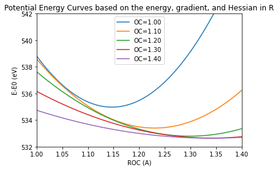
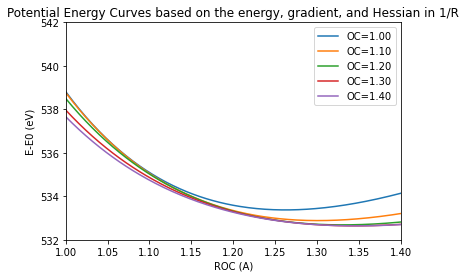
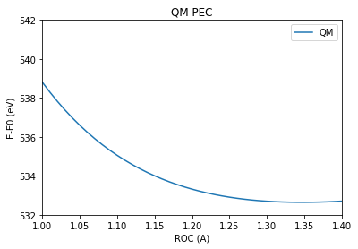
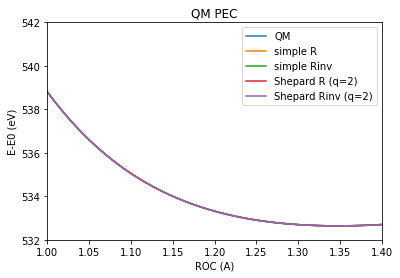

Potential energy surfaces by interpolation
Contents
Potential energy surfaces by interpolation¶
Core-excited state PES by interpolation¶
import MolecGeom
import impes
import MatPltHelp as my_plot
import numpy as np
import py3Dmol as p3d
np.set_printoptions(precision=7, suppress=True)
gs_acetic_acid = MolecGeom.Geometry()
gs_acetic_acid.new_read_xyz("mp2_opt_def2.xyz")
Transform the gradient and Hessian to internal coordinates¶
1. Define a set of internal coordinates via a Z-matrix¶
zmat = [[0,7], [0,3], [7,0,3], [3,1], [0,3,1], [7,0,3,1], [2,3],
[2,3,0], [2,3,0,7], [4,2], [4,2,3], [4,2,3,1], [5,2], [5,2,3],
[5,2,3,1], [6,2], [6,2,3], [6,2,3,1] ]
2 Read the gradient and Hessian in Cartesian coordinates and tranform to internal coordinates¶
The steps for transforming Cartesian \(x\) to internal \(q\) coordinates are:
Determine the Willson \(\mathbf{B}\) matrix:
(179)¶\[\begin{equation} B_{ij} = \frac{\partial q_i}{\partial x_j} \end{equation}\]Construct the \(\mathbf{G}\) martix:
(180)¶\[\begin{equation} \mathbf{G} = \mathbf{B}\mathbf{B}^\mathrm{T} \end{equation}\]Set up and solve the eigenvalue equation for \(\mathbf{G}\), to separate out redundancies:
(181)¶\[\begin{equation} \mathbf{G}\begin{pmatrix}\mathbf{U} & \mathbf{R}\end{pmatrix} =\begin{pmatrix}\mathbf{U} & \mathbf{R}\end{pmatrix} \begin{bmatrix} \boldsymbol{\Lambda} & 0 \\ 0 & 0 \end{bmatrix} \end{equation}\]Select the non-zero eigenvalues \(\boldsymbol{\Lambda}\) and corresponding eigenvectors and construct the generalized inverse matrix \(\mathbf{G}^{-}\):
The gradient can be transformed using:
(183)¶\[\begin{equation} \mathbf{g}_q = \mathbf{G}^{-}\mathbf{B}\mathbf{g}_x \end{equation}\]For the Hessian, the second order derivatives of internal coordinates with respect to Cartesian coordinates are required:
(184)¶\[\begin{equation} B^{(2)}_{ijk} = \frac{\partial^2 q_i}{\partial x_j\partial x_k} \end{equation}\]Then, the Hessian is transformed by:
(185)¶\[\begin{equation} \mathbf{H}_q = \mathbf{G}^{-} \mathbf{B} \left[ \mathbf{H}_x - \mathbf{g}_q \mathbf{B}^{(2)}\right]\mathbf{B}^\mathrm{T} \mathbf{G}^{-\mathrm{T}} \end{equation}\]The transformation to use \(u=1/R\) instead of \(R\) is a simple change of variables:
(186)¶\[\begin{equation} g(u) = \frac{\mathrm{d} E}{\mathrm{d}u}=\frac{\mathrm{d} E}{\mathrm{d}R}\frac{\mathrm{d} R}{\mathrm{d}u} = \frac{\mathrm{d} E}{\mathrm{d}R}\frac{\mathrm{d} u^{-1}}{\mathrm{d}u} = -u^{-2}\,g(R) = -R^{2} \,g(R) \end{equation}\]
# Some pre-requisites
fileName = "mp2_opt_def2.xyz"
co_index = 3 # index in the Z-matrix of the coord. of interest (C=O bond here)
AtoBohr = 1.8897161646320724 # conversion factor from Ångstrom to Bohr
HtoeV = 27.211385 # conversion factor from Hartree to eV
gs_mp2 = -228.28777810 # GS energy at equilibrium geometry
# Names of the files containing the gradient and Hessian in Cartesian coordinates:
names = ["mp2_opt_def2",
"forpes_corr_1.00_1.50",
"forpes_corr_1.05_1.50",
"forpes_corr_1.10_1.50",
"forpes_corr_1.15_1.50",
"forpes_corr_1.20_1.50",
"forpes_corr_1.25_1.50",
"forpes_corr_1.30_1.50",
"forpes_corr_1.35_1.50",
"forpes_corr_1.40_1.50",
]
# using R
Rs = [] #list with values of the O=C bond length
Es = [] #list of energies
gs = [] #list of the gradients transformed to internal coordinates
Hs = [] #list of Hessians transformed to internal coordinates
# using 1/R
gs_rinv = [] # the gradient using 1/R
Hs_rinv = [] # the Hessians using 1/R
for name in names:
molecule = MolecGeom.Geometry()
molecule.new_read_xyz(fileName)
# Read the Cartesian coordinates, energy, gradient and Hessian
molecule.read_cart(name+"_new_cvs-adc2x_def2-SVP.cart")
#print("Energy: %15.5f H." % molecule.energy)
# Transform Cartesian coordinates to internal coordinates using
# derivatives of q wrt. x from geomeTRIC
molecule.transform_to_internals_geomeTRIC(zmat)
molecule.transform_Hessian_to_internal()
molecule.symmetrize_internal_Hessian()
R = molecule.internals[co_index] * AtoBohr #! Must be in Bohr!
E = (molecule.energy - gs_mp2) * HtoeV
G = molecule.internal_gradient[co_index]
H = molecule.internal_hessian[co_index, co_index]
# Append data for interpolation
Rs.append(R)
gs.append(G)
Hs.append(H)
Es.append(E)
# Transform to 1/R:
# Uncomment if you want to use 1/R (Rinv)
molecule.transform_to_Rinv()
Ginv = molecule.internal_gradient[co_index]
Hinv = molecule.internal_hessian[co_index, co_index]
gs_rinv.append(Ginv)
Hs_rinv.append(Hinv)
molecule.remove_all()
Use the energy, gradient, and Hessian to represent the core-excited state PES analytically¶
n = len(Rs)
Vs = [] #list of potentials for interpolation
Vs_rinv = [] #list of potentials for interpolation, 1/R
oc = np.arange(1.0, 1.41, 0.002) # grid to represent the potential on
ref = [] # required for the plot routine
xs = [] # required for the plot routine
labels = []
for i in range(n):
vi = impes.calculate_pes(Rs[i], Es[i], gs[i], Hs[i], oc, inverse=False) # inverse=False -> use R; inverse=True -> use 1/R
Vs.append(vi)
vinv = impes.calculate_pes(Rs[i], Es[i], gs_rinv[i], Hs_rinv[i], oc, inverse=True)
Vs_rinv.append(vinv)
ref.append(0)
xs.append(oc)
if "mp2" in names[i]:
labels.append("OC=1.21")
else:
labels.append("OC="+names[i][-9:-5])
# Plot
min_qm = 532
max_qm = 542
my_plot.plot_1d(xs[1::2], Vs[1::2], labels=labels[1::2],
gs=ref[1::2],
title="Potential Energy Curves based on the energy, gradient, and Hessian in R",
name = "qm_vs_my_impes_R.eps", xlabel="ROC (A)",
ylabel="E-E0 (eV)", au=True, xax=[1.0,1.4], save='no',
yax=[min_qm,max_qm],
)

my_plot.plot_1d(xs[1::2], Vs_rinv[1::2], labels=labels[1::2],
gs=ref[1::2],
title="Potential Energy Curves based on the energy, gradient, and Hessian in 1/R",
name = "qm_vs_my_impes_R.eps", xlabel="ROC (A)",
ylabel="E-E0 (eV)", au=True, xax=[1.0,1.4], save='no',
yax=[min_qm,max_qm],
)

Construct the interpolated core-excited state PES¶
where \(w_i(\mathbf{q})\) are the normalized weights:
There are different ways to determine the unnormalized weights:
Simple interpolation:
Shepard interpolation:
simple_r = impes.simple_interpolate(Rs, Vs, oc, exponent=12)
shepard_r = impes.interpolate(Rs, Vs, oc, exp1=24, exp2=4, crad=0.5)
simple_rinv = impes.simple_interpolate(Rs, Vs_rinv, oc, exponent=12)
shepard_rinv = impes.interpolate(Rs, Vs_rinv, oc, exp1=24, exp2=4, crad=0.5)
# Import QM PES
folder = '/home/emi/Documents/CALCULATIONS/adc_grad/XES_AA/'
folder += 'single_molecule/correct_O1s/QMPES/'
qm_data = np.loadtxt(folder+'partial_energy_data.dat')
qoc = np.arange(1.0, 1.41, 0.01)
cch3 = np.arange(1.2,1.71, 0.01)
noc = len(qoc)
ncch3 = len(cch3)
qm_energy = np.zeros((noc,ncch3))
k = 0
l = 0
qm_1d_cut = np.zeros_like(qoc)
for i in range(len(qoc)): #rOC in oc:
for j in range(ncch3): #rCCH3 in cch3
if abs(cch3[j]-1.5) < 1e-7:
qm_1d_cut[i] = qm_data[k, 2]
k += 1
qm_1d_cut = (qm_1d_cut - gs_mp2) * HtoeV
# Plot interpolated PES vs. QM PES
xs = [qoc, oc, oc, oc, oc]
to_plot = [qm_1d_cut, simple_r, simple_rinv, shepard_r, shepard_rinv]
ref = [0,0,0,0,0]
labels = ['QM', 'simple R', 'simple Rinv', 'Shepard R (q=2)', 'Shepard Rinv (q=2)']
my_plot.plot_1d(xs[:1], to_plot, labels=labels,
gs=ref,
title="QM PEC",
name = "qm_vs_my_impes_q2.eps", xlabel="ROC (A)",
ylabel="E-E0 (eV)", au=True, xax=[1.0,1.4], save='no',
yax=[min_qm,max_qm],
)

my_plot.plot_1d(xs, to_plot, labels=labels,
gs=ref,
title="QM PEC",
name = "qm_vs_my_impes_q2.eps", xlabel="ROC (A)",
ylabel="E-E0 (eV)", au=True, xax=[1.0,1.4], save='no',
yax=[min_qm,max_qm],
)
